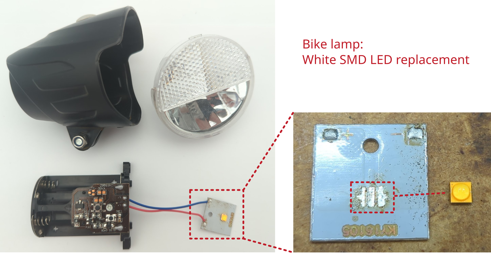

Bike rear light

Manufacturer: Trelock
Type: LS 623
Description of failure
The rear light has a storage capacitor (also called supercapacitor) which ensures that the rear light on the bike remains illuminated when you stop.
Failure investigation
As the light continues to work, it is reasonable to assume that the supercapacitor is defective. First, the housing must be opened. This is explained very well in this video. The capacitor can then be replaced (1 F, 5.5 V, RM 20). As the housing usually no longer closes tightly after opening, you should consider gluing it.
Reichelt order number for the supercapacitor: KO DCL5R5105HF